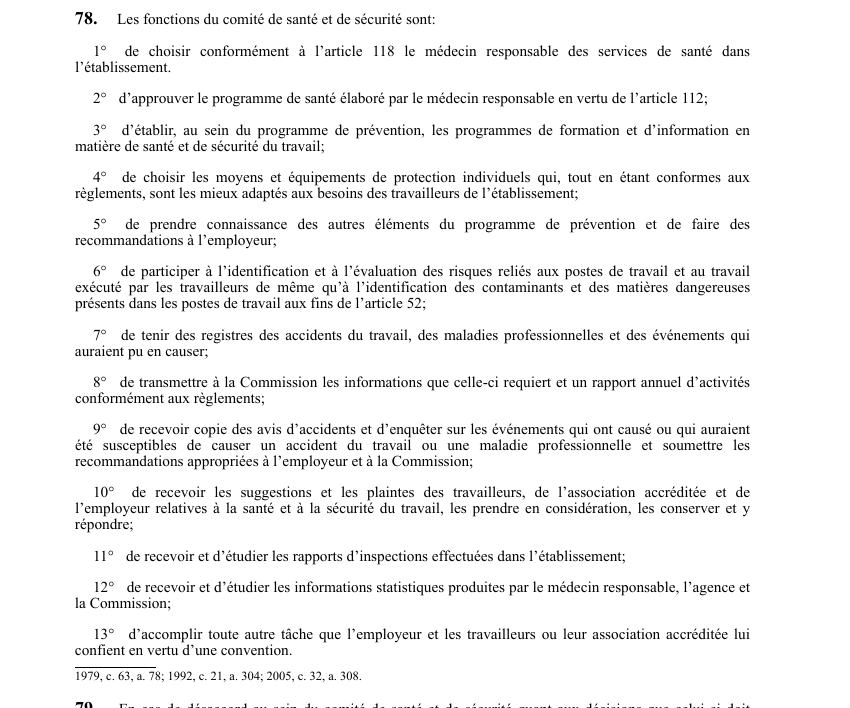

art-78-LSST : fonctions du comité SST
Un article du wiki ⚖️ Recueil législatif
🌐 LegisQuébec · 📄 PDF officiel (page 26)
Texte officiel : capture du PDF

🔗 Ouvrir a cette page : LSST.pdf : page 26 · texte a jour au 26 mars 2024
En bref
Le comité de santé et de sécurité exerce des fonctions comprenant le choix du médecin responsable, l'approbation du programme de santé, l'élaboration des programmes de formation. Il s'agit d'une obligation.
- Le choix des équipements de protection.
Voir aussi
- art. 76 : temps réputé réunions comité · les représentants des travailleurs sont réputés être au travail lorsqu'ils participent aux réunions et travaux du comité.
- art. 77 : avis absence travaux comité · obligation : les représentants des travailleurs doivent aviser leur supérieur immédiat ou l'employeur lorsqu'ils s'absentent de leur travail pour participer aux réunions et travaux du comité.
- art. 79 : désaccord au sein du comité · faculté : en cas de désaccord sur les décisions visées aux paragraphes 1° à 4° de l'article 78, les représentants des travailleurs soumettent leurs recommandations par écrit ; si le litige persiste, il peut être soumis à la Commission dont la décision est exécutoire.
- art. 80 : affichage des membres du comité · obligation : l'employeur doit afficher les noms des membres du comité de santé et de sécurité dans autant d'endroits de l'établissement visibles et facilement accessibles aux travailleurs qu'il est raisonnablement nécessaire.
- 🔧 Modifié par : LMRSST · Article modificateur de la LMRSST.
- ↑ Loi : LSST
Pages qui pointent ici (13)
- art-141-RSST, signalisation Sécurité industrielle
- art-154-LMRSST, mod. art. 78 LSST Recueil législatif
- art-155-LMRSST, insertion LSST après art. 78 Recueil législatif
- art-76-LSST, représentants travailleurs sont réputés Recueil législatif
- art-77-LSST, représentants travailleurs doivent aviser Recueil législatif
- art-79-LSST, réunions comité sst Recueil législatif
- art-80-LSST, comité SST Recueil législatif
- Enquête d'accidents Sécurité industrielle
- LSST Recueil législatif
- LSST - Chapitre V - Comité de santé et de sécurité Recueil législatif
- Obligations de l'employeur Droit du travail
- PDFs Recueil législatif
- Représentant à la prévention Recueil législatif